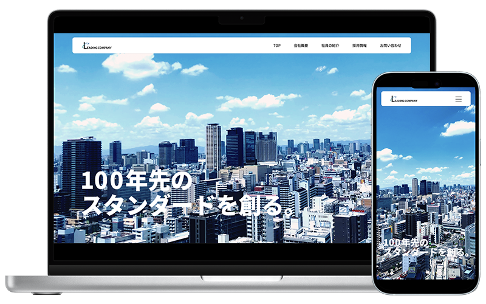
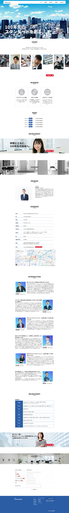
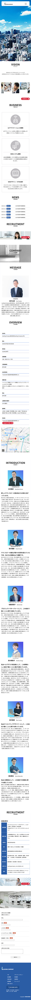

架空のIT企業コーポレートサイト
- 学校課題
- #WEBサイト

| 概要 | 架空のIT企業「Leading Company株式会社」のコーポレートサイトを制作しました。 |
|---|---|
| 目的 | 「誠実なイメージを持つ企業」、「最先端の技術を扱っている」という強みがある会社だが、 Web上での情報発信が弱く、会社名やサービス内容が広く知られていないという課題を持っている。 そのため、企業の理念やサービス内容を広く発信し、認知度の向上およびブランディングを行う。 |
| ターゲット | 採用強化や取引先の拡大も見据え、20代〜40代の男女をメインターゲットとし、 IT業界に関心のある求職者に加え、ビジネスパートナーとなる企業のご担当者様を想定。 |
| 制作にあたって | ファーストビューには、都市のビル群の画像を使用し、 都会的で洗練された印象と最先端技術を扱う企業イメージを演出しました。 トップページではSwiper.jsによるスライダーで印象的なビジュアルを動的に切り替え、企業の多様性と可能性を表現しています。 ユーザーの訪問直後に企業の魅力が伝わるよう、視覚的インパクトと動きを重視しました。 |
| デザイン | サイト全体のカラーデザインは、青色をベースカラーとして採用し、「誠実さ」「信頼感」を表現しています。 また、アクセントカラーとして赤色を取り入れることで、寒色系のデザインに温かみやエネルギーを加え、 印象に残るビジュアルに仕上げました。 シンプルで洗練されたレイアウトを採用し、訪問者が直感的に操作できるUIを目指し、 スタイリッシュで現代的な印象を与えるデザインに仕上げています。 |
| 制作期間 | ワイヤーフレーム 1日 デザイン 3日 コーディング 2週間 |
| 使用したツール | Photoshop / Illustrator / Figam / DreamWeaver / Visual Studio Code |

